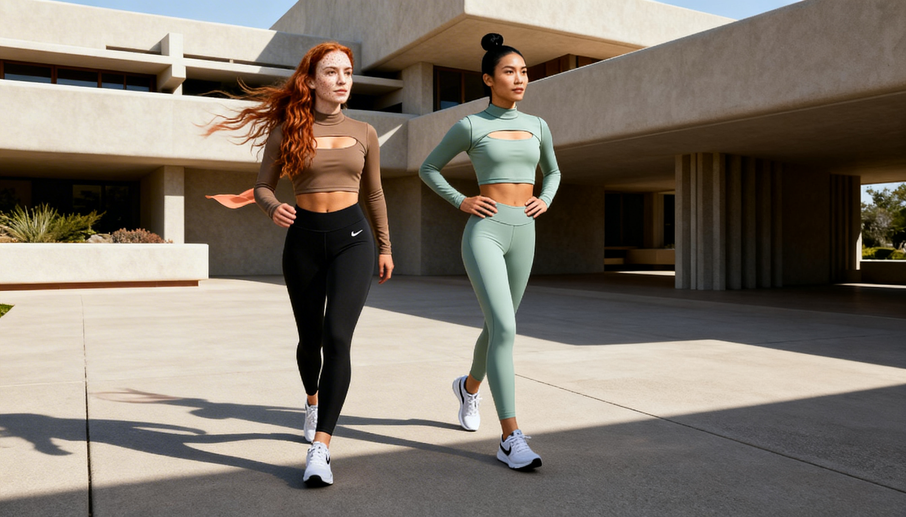

Theoretical · Apparel · Color
NIKE WOMEN'S FALL
Seasonal Color & Apparel Concept · Self-Initiated


Product mockup — add as work-nike-2.jpg
A self-initiated seasonal concept for Nike Women's — built from the ground up to demonstrate how I think about color, culture, and product as one connected system. This project follows the same process I'd use on the job: cultural research, moodboarding, palette development, graphic direction, and product application.
The goal was to show the full arc of thinking — not just a finished mockup, but the decisions behind it. Why this palette. Why this material direction. Why these graphics on these silhouettes. The kind of thinking that turns a mood board into product that actually moves.